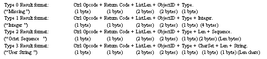

|
| |
IrDA Information Acces Service (IAS) database queries are handled on the client side through the RNetDatabase class.
After instantiating and opening an RNetDatabase object, an IAS query is constructed from a TIASQuery object. The constructor of a TIASQuery requires two descriptors containing the IAS query class name and attribute name. The TIASQuery constructor also takes the remote device address of a discovered machine because when a query is made, the underlying IrLAP connection may not have been established.
At the protocol level, the IAS query code has been designed to kick up IrLAP and IrLMP layer connections if they are not present. An RNetDatabase::Query() call is invoked using a TIASResponse instance and the previously constructed TIASQuery object. This is an asynchronous call which completes with:
KErrNone, if the query is successfully completed.
KErrBadName, if no such class has been found on the remote device’s IAS.
KErrUnknown ,if the class is present but not the queried attribute.
The application writer is assumed to have some knowledge of the format of IAS queries and responses even though comprehensive IAS response parsing functions are exported from the TIASResponse class. IAS response strings have the following valid formats:

Examples of key valid IAS queries and response types are given below with the Class and Attribute Names taking exactly the format they must pass on to a TIASQuery constructor.
|
* Note that these two “Device” class attributes must be supported by an IrDA-compliant remote station.
The classes RNetDatabase, TIASQuery and TIASResponse are used for querying a remote station’s IAS server.
Copyright ©2002 Symbian Ltd. 6.1-00174 |
|